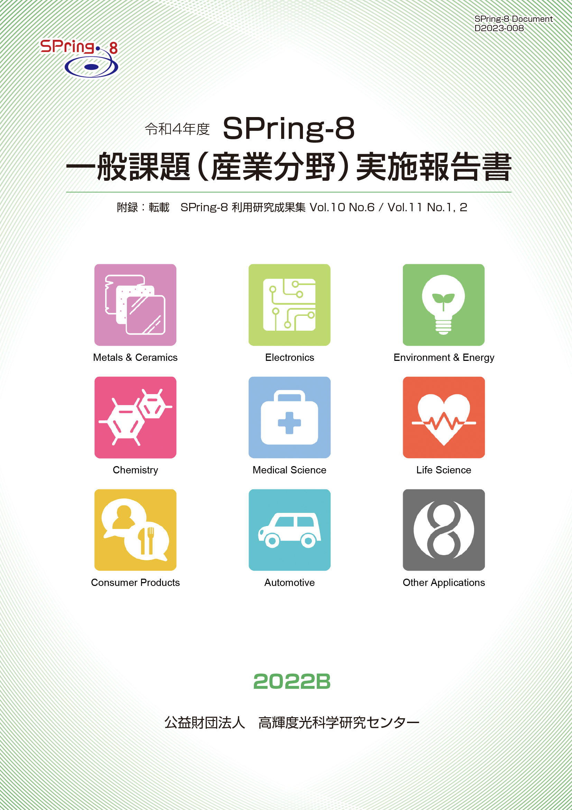
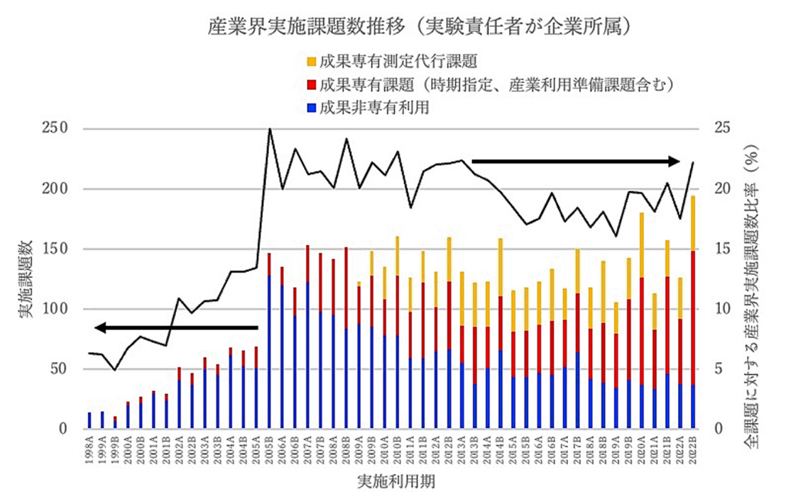

目次

1. はじめに2. 課題募集制度の概要
3. 成果公開の考え方
4. 実施状況
5. 産業利用分野の利用動向
6. 報告書
* 送付を希望される方は、連絡先（氏名、所属、〒住所、E-mail）をご記入の上、 事務局 support@spring8.or.jp までE-mailでご連絡ください。
はじめに
本報告書は2022B期に産業利用分野で審査・採択された一般課題（以降、一般課題（産業利用分野）と呼称）として実施された課題の実施状況の報告を目的として、SPring-8利用研究成果集としての審査を行わなかった課題の報告書を収録したものである。
本報告書が対象としている課題募集制度の概要
-
一般課題（産業利用分野）
- 新規利用拡大の観点から課題審査において利用経験を考慮する。
- 民間企業利用拡大の観点から課題審査において所属機関を考慮する。
- 課題実施後約2～4か月以内に所定の書式の産業利用課題実施報告書を提出する。なお、この報告書はSPring-8利用研究成果集として審査を受けることも可能である。
- 全採択課題に担当コーディネーターを配置する。
- 科学技術的妥当性に関する審査は
(1)産業基盤技術としての重要性および発展性
(2)社会的意義および社会経済への寄与度
に重点をおいて実施する。
この「一般課題（産業利用分野）」の課題とは、成果非専有の一般課題のうち、課題申請の際に産業利用分野での課題審査を希望した課題（課題審査は課題審査委員会 産業利用分科会が行う）を示す。この課題の申請については、実験責任者もしくは共同実験者に民間企業もしくは、それに準じる機関に所属する者が含まれていることを申請要件としている。民間企業に準ずる機関とは、民間企業からの委託による試験・研究・開発を事業に含んでいる機関と定義している。また、地方自治体が設置している公設試験場や地方独立行政法人等（○○県工業技術センター）は、民間企業に準ずる機関から除外している。その他に、本制度は以下の５項目の特徴を持つ。
なお、2022A期まで産業利用分科会を主審査分科会としていた旧産業利用ビームラインのBL14B2（現XAFS II）、BL19B2（現X線回折・散乱 II）、BL46XU（現HAXPES II）のみで行っていた年６回募集注1は、2022B期からBL01B1、BL02B1、BL02B2、BL09XU、BL13XU、BL47XU（一部注2）を加えた計９ビームラインにおいて、産業利用分科会審査の課題以外にも拡大して実施されることになった。なお、上記の３本の旧産業利用ビームラインの課題申請は、産業利用分科会審査の課題以外も2022B期から受け入れることになった。
*注1）一般課題（産業利用分野）だけでなく大学院生提案型課題及び成果専有課題、成果公開優先利用課題も受付。
*注2）BL47XUのA2期、A3期、B2期、B3期の課題募集は、募集マシンタイムは6シフトのみで、募集分野は産業利用分野のみ。
本報告書が対象としている課題の成果公開の考え方
成果の公開については、他の成果非専有の一般課題と同様に学術誌上への論文掲載（博士論文も含む）もしくはSPring-8利用研究成果集への採録による成果公開が求められる。この産業利用課題実施報告書の提出は「成果の公開」とは認定されないが、これらの報告書は著者からの申し出により課題ごとにSPring-8利用研究成果集としての審査を受けることが可能である。SPring-8利用研究成果集としての審査を受けない実施報告書は、JASRIコーディネーター等による校閲を経て課題実施期が終了して約6か月後に出版･公開されるが、それ以外はSPring-8利用研究成果集としての掲載をもって公開とする。
実施状況
以下に令和４年度2022B期の一般課題（産業利用分野）の応募・採択結果を表1にまとめる。
- 応募・採択結果 一般課題（産業利用分野）
表 1．応募時期及び研究機関別一般課題応募・採択結果
＊ 応募数と採択数には、一般課題と同時に審査される大学院生提案型課題（応募数：B1期 2課題、B2期 3課題、B3期 1課題 ／ 採択数：B1期 2課題、B2期 0課題、B3期 0課題）を除く。募集時期 機関分類 応募数＊採択数採択率（%）第1期募集学官12758.3産業界14750.0合計261453.8第2期募集学官12650.0産業界4125.0合計16743.8第3期募集学官7228.6産業界2150.0合計9333.3総計512447.1
昨年度同時期の2021B期の課題実施状況を比較すると、まず応募課題数は51課題で昨年度の121課題に対し大きく減少した。機関分類の内訳を見ると学官が31課題、産業界（企業）が20課題で、昨年度の学官94課題、産業界27課題と比較すると、学官のユーザーの申請が大きく減少していることがわかる。これはこれまで３本の旧産業利用ビームラインに課題申請していた学官のユーザーが、今期からこれらのビームラインでも一般課題（産業利用分野）以外の課題も受け入れることとなったため、一般課題（産業利用分野）での申請要件である「共同実験者に民間企業もしくはそれに準ずる機関が含まれること」という制約のないそれ以外の課題で申請したことが主な要因と思われる。採択率は昨年度2021B期の67.8%に対し、今期の2022B期は47.1％と減少している。
- SPring-8利用研究成果集としての審査
前記のとおり2011B期より成果公開の扱いが変更になったため、実験責任者の希望に応じて重点産業利用報告書をSPring-8利用研究成果集（現在はSPring-8/SACLA利用研究成果集）として査読審査を受けて公開文書として扱うことも可能とした。放射光施設横断産業利用課題及び産業利用分野の一般課題も同様で、SPring-8/SACLA利用研究成果集として審査を受ける公開文書とすることができる。SPring-8/SACLA利用研究成果集への公開は査読審査が終了し成果審査委員会での承認後となるため、SPring-8/SACLA利用研究成果集に投稿予定の課題は採録していない。このため、今回は2022B期の採録対象課題 25課題のうち24課題と別途提出のあった1件の計25課題の報告書を掲載する。また、2022A期の報告書発行後に対象課題でSPring-8/SACLA利用研究成果集に掲載された7課題の報告書を付録として掲載する。
産業利用分野の利用動向
-
図1はSPring-8の共同利用が開始された1998年からの利用期毎の産業界ユーザーの実施課題数の推移である。成果非専有利用（青）と成果専有利用で分類して示しており、成果専有利用については成果専有課題（時期指定、産業利用準備課題も含む）（赤）と成果専有測定代行課題（橙）に分類している。黒線で示しているのは全実施課題数に対する産業界ユーザーの実施課題数比率である。この産業界ユーザーの実施課題数比率は2005B期に20%を超えた後、ほぼ同程度の水準を維持している。しかしながら、この間に利用形態は大きく変わっており、2005B期には87%が成果非専有利用であったが、その後成果専有利用へのシフトが進み、今期の2022B期には81％が成果専有利用である。この成果専有利用へのシフトを牽引したのが2009年度から開始した成果専有測定代行課題で、2013Aから2018B期にかけて成果専有利用のうち約半分を占めている。近年ではさらにこの成果専有測定代行課題以外の成果専有利用が増加傾向にあり、2022B期ではこの成果専有測定代行課題以外の利用が100件以上にまで増加した（成果専有利用の内の約80%）。この増加が牽引し、2022B期の産業界ユーザーの実施課題数は過去最大となった。

図1. 共同利用実験として実施された産業界課題の実施数推移
報告書
附録 “SPring-8/SACLA利用研究成果集 Section B”より転載
Volume 10 No.6（https://www.jstage.jst.go.jp/browse/springresrep/10/6/_contents/-char/ja） |
|||
2016A1765 |
成膜条件の異なるサファイア単結晶基板上CeO2膜の二次元微小角入射広角X線回折法による膜深さ方向の優先配向性評価 | 深野 達雄 | (株)豊田中央研究所 |
2017A1580 |
時間分解XAFS電気化学計測同時測定による電池材料の解析 | 今井 英人 | (株)日産アーク |
Volume 11 No.1（https://www.jstage.jst.go.jp/browse/springresrep/11/1/_contents/-char/ja） |
|||
2016B1868 |
低温・高磁場で高臨界電流・高耐ひずみ特性を有する高温超伝導薄膜実現に向けた人工ピンニングセンターの探索 | 菅野 未知央 | 高エネルギー加速器研究機構 |
2017B1784 |
アークプラズマ法で作製した燃料電池材料用白金触媒の局所構造解析 | 今井 英人 | (株)日産アーク |
2021B1762 |
硬X線光電子分光法による電位制御下鉄鋼表面状態分析 | 土井 教史 | 日本製鉄(株) |
Volume 11 No.2（https://www.jstage.jst.go.jp/browse/springresrep/11/2/_contents/-char/ja） |
|||
2019A1646 |
3D Imaging of Liquid Film Migration in Aluminium Alloy after Brazing using Phase-contrast Tomography | Robert Moberg | Uppsala Synchrotronix AB |
2019A1780 |
小角X線散乱による硬化過程におけるセメント粒子の挙動観察 | 人見 尚 | (株)大林組 |
発 行 日： 令和 5 年 8 月 25 日
編集・発行： 公益財団法人 高輝度光科学研究センター
「令和4年度 SPring-8 一般課題(産業分野)実施報告書 (2022B)」送付を希望される方は、 連絡先（氏名,所属,〒住所,E-mail）をご記入の上、事務局 support@spring8.or.jp までE-mailでご連絡ください。